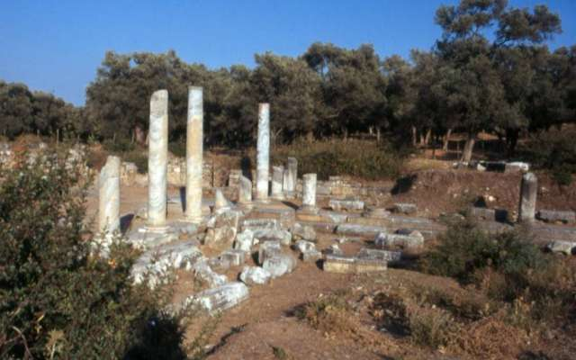
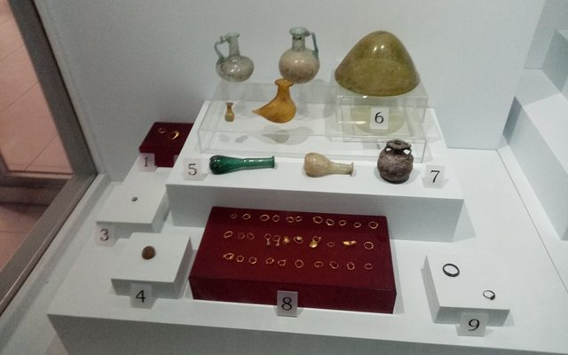

Inicio › Qué ver, provincia por provincia › Muğla
La guía Kültür Varlıkları reúne 48 lugares en Muğla: 32 yacimiento arqueológico, 9 museo, 2 lago, 2 ruta de senderismo, 1 rafting, 1 castillo y edificio histórico, 1 cañón. A continuación encontrará lo más destacado, un mapa y la lista completa.
⭐ Lo más destacado

1 · Muğla · Yacimiento arqueológicoYacimiento de Cnido
Cnido, en la punta de la península de Datça, donde el Egeo se encuentra con el Mediterráneo, fue una ciudad doria con dos puertos.

2 · Muğla · Yacimiento arqueológicoTumba rupestre de Amintas
La tumba rupestre de Amintas, tallada en los acantilados sobre el centro de Fethiye, es una de las tumbas rupestres más impresionantes de Licia.

3 · Muğla · Yacimiento arqueológicoCiudad antigua de Amos
Cerca de Turunç (Marmaris), ciudad caria helenística en una colina sobre la bahía de Kumlubük.
🗺 En el mapa
📍 Todos los lugares (48)
Yacimiento arqueológico (32)
Yacimiento de CnidoYacimiento arqueológicoTumba rupestre de AmintasYacimiento arqueológicoCiudad antigua de AmosYacimiento arqueológico ArsadaYacimiento arqueológico
ArsadaYacimiento arqueológico BargiliaYacimiento arqueológico
BargiliaYacimiento arqueológico Teatro antiguo de BodrumYacimiento arqueológico
Teatro antiguo de BodrumYacimiento arqueológico Isla de Gemiler (Fethiye)Yacimiento arqueológico
Isla de Gemiler (Fethiye)Yacimiento arqueológico Kayaköy (Fethiye)Yacimiento arqueológico
Kayaköy (Fethiye)Yacimiento arqueológico Yacimiento del Letoon (Fethiye)Yacimiento arqueológico
Yacimiento del Letoon (Fethiye)Yacimiento arqueológico Yacimiento de Pinara (Fethiye)Yacimiento arqueológico
Yacimiento de Pinara (Fethiye)Yacimiento arqueológico Yacimiento de Tlos (Fethiye)Yacimiento arqueológico
Yacimiento de Tlos (Fethiye)Yacimiento arqueológico Mausoleo de GümüşkesenYacimiento arqueológico
Mausoleo de GümüşkesenYacimiento arqueológico Heraclea del LatmosYacimiento arqueológico
Heraclea del LatmosYacimiento arqueológico
Yacimiento de IasosYacimiento arqueológico Ciudad antigua de CadiandaYacimiento arqueológico
Ciudad antigua de CadiandaYacimiento arqueológico Yacimiento de CaunoYacimiento arqueológico
Yacimiento de CaunoYacimiento arqueológico Ciudad antigua de CéramoYacimiento arqueológico
Ciudad antigua de CéramoYacimiento arqueológico Yacimiento de LabraundaYacimiento arqueológico
Yacimiento de LabraundaYacimiento arqueológico Yacimiento de LaginaYacimiento arqueológico
Yacimiento de LaginaYacimiento arqueológico Fortaleza de LorymaYacimiento arqueológico
Fortaleza de LorymaYacimiento arqueológico Castillo y yacimiento de Beçin (Milas)Yacimiento arqueológico
Castillo y yacimiento de Beçin (Milas)Yacimiento arqueológico Yacimiento de Euromos (Milas)Yacimiento arqueológico
Yacimiento de Euromos (Milas)Yacimiento arqueológico Mausoleo de Hecatomno (Uzunyuva)Yacimiento arqueológico
Mausoleo de Hecatomno (Uzunyuva)Yacimiento arqueológico Tumba Monumental y Complejo Museístico de Uzunyuva (Milas)Yacimiento arqueológico
Tumba Monumental y Complejo Museístico de Uzunyuva (Milas)Yacimiento arqueológico Ciudad antigua de MindoYacimiento arqueológico
Ciudad antigua de MindoYacimiento arqueológico Ciudad antigua de EnoandaYacimiento arqueológico
Ciudad antigua de EnoandaYacimiento arqueológico Ciudad antigua de PedasaYacimiento arqueológico
Ciudad antigua de PedasaYacimiento arqueológico PydnaiYacimiento arqueológico
PydnaiYacimiento arqueológico Isla de Sedir (Cedreas)Yacimiento arqueológico
Isla de Sedir (Cedreas)Yacimiento arqueológico Ciudad antigua de SidimaYacimiento arqueológico
Ciudad antigua de SidimaYacimiento arqueológico Yacimiento de EstratoniceaYacimiento arqueológicoHyllarimaYacimiento arqueológico
Yacimiento de EstratoniceaYacimiento arqueológicoHyllarimaYacimiento arqueológicoMuseo (9)
 Sala del Pecio de Vidrio de Serçe Limanı (Bodrum)Museo
Sala del Pecio de Vidrio de Serçe Limanı (Bodrum)Museo Museo de Arqueología Subacuática de BodrumMuseo
Museo de Arqueología Subacuática de BodrumMuseo
Museo de FethiyeMuseo Museo del Mercado de Pescado de Iasos (Milas)Museo
Museo del Mercado de Pescado de Iasos (Milas)Museo Museo Monumento del Mausoleo de BodrumMuseo
Museo Monumento del Mausoleo de BodrumMuseo Museo de MuğlaMuseo
Museo de MuğlaMuseo Museo de Arte Zeki MürenMuseoMuseo de MarmarisMuseoMuseo de Obras en Piedra de MilasMuseo
Museo de Arte Zeki MürenMuseoMuseo de MarmarisMuseoMuseo de Obras en Piedra de MilasMuseo